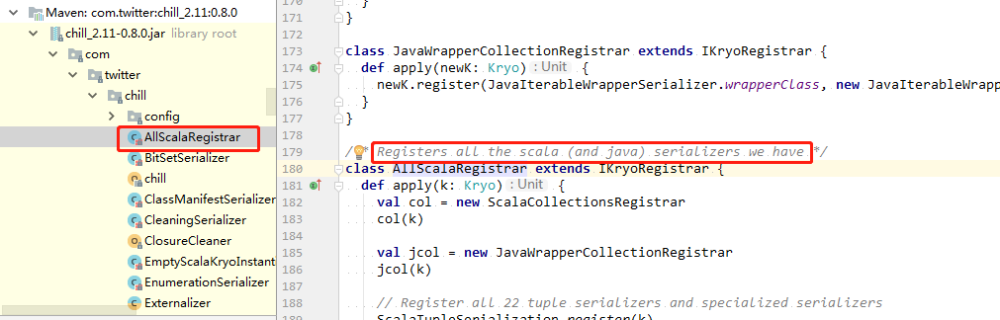

调试Spark（Tuning Spark）$
因为Spark运算的in-memory本质，集群的CPU、网络带宽、内存都会成为Spark程序的瓶颈。最经常出现的是，内存合适，而瓶颈是网络带宽，但是有时候，仍然需要一些调试，例如以序列化的形式存储RDDs，以减少内存的使用。本调试指南将覆盖两个主要议题：数据序列化，序列化对于好的网络表现是关键并且能够减少内存使用；内存调试。也会简单介绍几个小的议题。
1、数据序列化（Data Serialization）
对于任何分布式应用来说，序列化都是很重要的。序列化对象的速度比较慢或者消耗大量的字节都会极大的降低运算速度。通常这是提升Spark应用性能首先需要调试的东西。Spark的目标是在便利性（可以在操作中使用任何java类型）和表现之间达到一个平衡。它提供两种序列化库：
- Java serialization：默认情况下，Spark使用Java的ObjectOutputStrean框架序列化对象，并且可以使用用户创建的继承了java.io.Serializable的类进行工作。也可以通过扩展java.io.Externalizable密切地控制序列化的表现。Java序列化很灵活但是非常慢，并且对许多的类序列化结果是很大的序列化格式。
- Kryo serialization：Spark也可以个使用Kryo库（version 2）来快速地序列化对象。Kryo显著的比Java序列化快和紧凑（通常是Java序列化的10倍），但是不支持所有的Serializable类型需要提前注册在程序中使用的类以达到最佳的表现。
可以使用SparkConf调用conf.set("spark.serializer", "org.apache.spark.serializer.KryoSerializer")来初始化job以开启使用Kryo。这个设置不仅为工作节点间数据混洗配置了serializer也为序列化RDDs到磁盘配置了serializer。Kryo不是Spark默认选项的唯一原因是它需要自定义注册，但是推荐在所有的网络集约应用使用Kryo。自从Spark2.0.0开始，使用简单类型、简单类型数据或者字符串类型混洗RDDs时内部的使用Kryo serializer。
Spark从Twitter chill库（Spark默认依赖了twitter chill库）中的AllScalaRegistrar为许多的常用的核心Scala类自动包含了Kryo Serializers。如果要使用Kryo注册自定义的类，使用registerKryoClasses方法：
val conf = new SparkConf().setMaster(...).setAppName(...)
conf.registerKryoClasses(Array(classOf[MyClass1], classOf[MyClass2]))
val sc = new SparkContext(conf)
Kryo文档介绍了更加先进的注册选项，例如增加自定义的serialization代码。
如果对象很大，可能需要增大配置项spark.kryoserializer.buffer。这个值应该足够大以容纳需要序列化的最大的对象。
最后，如果不注册自定义的类，Kryo也会起作用，但是它将不得不把全类名（full class name）和每个对象一起保存，这样很浪费。
2、内存调试（Memory Tuning）
在调试内存使用中有三方面考虑：对象使用的内存大小（可能会把整个dataset放进内存）、访问这些对象的成本、垃圾回收的开销（如果对象方面周转很高）。
默认情况下，Java对象的访问很快，但是很容易会消耗它们属性中的“raw”数据的2-5倍的空间。这是因为以下几个原因：
- 每个不同Java对象有一个“object header”，大概是16字节并且包含一些信息（例如一个它的类的指针）。对于一个又很少数据量的对象（比如一个Int属性），这会比数据还要大。
- Java的字符串有比raw String大约多40字节的开销（因为他们保存在一个Char类型的数组中并且保存了像长度之类的额外数据），并且因为String类内部使用UTF-16编码要以2个字节存储每个字符。所以，一个10个字符的字符串可以轻松地消耗60字节。
- 通用集合类型，例如HashMap和LinkedList，使用脸是数据结构，对于每个entry（例如，Map.Entry）都有一个“wrapper”对象。这个对象不仅有一个header，也包含有指向集合中下一个对象的指针（一般8字节）。
- 原始类型的数据通常被保存为装箱的（“boxed”）对象，例如java.lang.Integer。
这一节以Spark中的内存管理开始，然后讨论怎样在应用中更高效的使用内存。会特别地描述怎样决定对象的内存使用和怎样提升内存使用（或者通过改变数据结构，或者以序列化的格式保存数据）。然后讲解调试Spark的缓存大小和Java的垃圾回收器。
2.1、内存管理概览（Memory Management Overview）
Spark中的内存使用大致分为两类：execution和storage。execution内存指的是用于混洗、joins、sorts和聚合运算的内存；而storage内存指的是用于缓存和在集群内部传播数据的内存。在Spark中，execution和storage使用统一的区域（M）。当没有execution使用内存的时候，storage可以获得所有可用的内存，反之亦然。如有必要，execution可能会赶出storage，但是最多只能把storage内存挤压到一个阈值（R）。即，R描述了一个M的子区域，其中缓存的数据块永远不会被赶出。因为实现方面比较复杂，storage不会赶出execution内存。
这种设计确保了几个想要的属性。首先，不需要使用缓存的应用可以使用整个空间来进行execution，避免不必要的磁盘溢出。第二、使用缓存的应用可以保留最小的存储空间（R）其中的数据块不会被赶出。最后，这种方式为多种工作负载提供了合理的开箱即用（out-of-the-box）的性能，而无需用户熟悉内存内部划分。
尽管有两个相关的配置，一般的用户不应该调试它们，因为默认的值适用于大多数的工作负载：
spark.memory.fraction以（JVM堆空间-300M）的因子（默认0.6）表示M的大小。剩下的空间（40%）是为用户的数据结构、Spark的内部metadata和保障不出现OOM（万一有稀疏的并且大得不寻常的记录）的错误而保留的。spark.memory.storageFraction以M空间的因子（默认0.5）表示R空间的大小。R是M中的存储空间，其中缓存的数据块不会被执行赶出。
spark.memeory.fraction的值应该以适应JVM的老或者“终身”代中堆空间的量为目的来设置。详情参考下面关于GC调试的讨论。
2.2、决定内存的消耗（Determining Memory Consumption）
衡量一个dataset需要消耗的内存的大小的最好方式是创建一个RDD，把它放进缓存，查看Web UI的“Storage”页面。这个页面会显示这个RDD占用了多少内存。
要估计一个特定对象的内存消耗，使用SizeEstimator的estimate方法。这个在测试不同数据形式的内存占用以减少内存占用时很有用；也可以用来确定广播变量在每个executor的堆上占用的空间。
2.3、调试数据结构（Tuning Data Structures）
减少内存消耗的第一个方法是比埋你使用增加开销地Java特征，例如基于指针的数据结构和包装类。有几个方法可以做到这个：
- 设计数据结构为对象的数组、原始类型而不是标准的Java或者Scala集合类（例如，HashMap).fastutil库提供了和Java标准库兼容的方便的基本类型的集合类。
- 尽量避免有许多小对象和指针的嵌套结构。
- 优先考虑数值类型IDs或者枚举对象而不是以字符串作为key。
- 如果RAM的到小小于32G，设置JVM标识
-XX:+UseCompressedOops以将指针占用内存改为4字节而不是8字节。可以在spark-env.sh中增加这些选项。
2.4、序列化的RDD存储（Serialized RDD Storage）
减少内存使用的更简单方法是使用序列化格式存储，使用RDD persistence API的序列化存储StorageLevel，例如MEMORY_ONLY_SER。Spark会保存每个RDD的分区为一个大的字节数组。以序列化形式保存数据的负面影响是减缓了访问速度，因为需要即时的反序列化每个对象。如果要用序列化格式存储数据，强烈推荐使用Kryo，它需要比Java序列化更小的空间。
2.5、垃圾回收调试（Garbage Collection Tuning）
就程序保存的RDDs而言当有巨大的“搅动”时JVM垃圾回收会是一个问题。（对于在程序中一次只读一个RDD然后在其上执行很多操作来说通常不是一个问题）当Java需要驱逐老的对象给新对象腾出空间的时候，它需要跟踪所有的java对象并找出不使用的对象。需要记住的一点是垃圾回收的成本和Java对象的数量是成比例的，所以使用拥有较少对象的数据结构（例如，一个Int数组代替LinkedList）会极大地降低垃圾回收成本。一个更好的方式是以序列化格式持久化对象，如上所述：这样每个RDD分区就只有一个对象（一个字节数组）。如果GC是一个问题，在尝试其它技术之前，首要的使用序列化缓存。
由于tasks的工作内存（需要运行task的空间的量）和节点上缓存的RDDs之间的干扰，GC也会成为一个问题。我们会讨论怎样控制分配给RDD缓存的空间来减轻这个问题：
2.5.1、衡量GC的影响（Measuring the Impact of GC）
GC调试的第一步是获取垃圾回收发生的频率和GC消耗的时间。可以通过王Java option中添加-verbose:gc -XX:+PrintGCDetails -XX:+PrintGCTimeStamps来实现。（查看配置向导来查看向Spark jobs传递Java options的信息）下次运行Spark Job的时候，就能在worker的日志中看到每次垃圾回收发生时的消息被打印出来。注意，这些日志会出现在集群工作者节点（在工作目录的stdout文件中），而不是在驱动程序上。
2.5.2、高级GC调试（Advanced GC Tuning）
为了进一步调试垃圾回收，首先需要理解一个JVM中内存管理的基础信息：
- Java的堆空间被划分为两个区Young和Old。Yong generation被用于hold生存时间短的对象而old generation用于长生命周期的对象。
- Young generation被划分为三个区[Eden，Survivor1，survivor2]。
- 垃圾回收处理的简单描述：当Eden满的时候，一个Eden上运行的minor GC以及Eden和Survivor1上活跃的对象被复制到Survivor2上。Survivor区域被交换。如果一个对象足够老或者Survivor2满了，它就会被移动到Old generation。最后当Old generation将要满的时候，会导致full GC。
Spark中GC调试的目的是确保长时间生存的RDD被保存在Old generation并且Young generation保存短时间生存的对象。这会帮助避免full GCs收集task执行过程中的暂时对象。一些可能有用的步骤是：
- 通过收集GC数据检查是否有太多垃圾回收。如果一个任务完成之前引起了多次的full GC，就意味着没有足够的内存来执行tasks。
- 如果有太多的minor GCs但是不多的major GCs，为Eden分配更多的内存会有帮助。可以设置Eden大小为任务需要内存的高估的值。如果Eden的大小是E，然后可以用选项-Xmn=4/3*E设置Young generation的大小。（通过4/3扩展空间也可以用于survivor区域）
- 在打印出的GC数据中，如果OldGen快要满了，通过见效spark.memory.fraction来减少用于缓存的内存量；更好的做法是缓存更少的对象而不是减缓task的执行。也可以考虑减少Young Generation的大小。这意味着降低-Xmn像上面设置的那样。如果不行，尝试更改JVM的NewRatio参数。许多JVMs的默认值是2，意味着OldGen占用堆内存的2/3。它应该足够大以超过spark.memory.fraction。
- 用-XX:+UseG1GC尝试G1GC垃圾回收器。在某些垃圾回收是瓶颈的情况下它可以提升表现。注意，如果使用较大的executor堆空间，使用-XX：G1HeapRegionSize提升G1 region大小可能很重要。
- 如果task从HDFS读取数据，可以通过从HDFS读取的数据block来估算task使用的内存的大小。注意，解压后的block的大小通常是block大小的2~3倍。所以如果要有3个或4个任务的工作空间，并且HDFS的块的大小是128M，可以估计Eden空间的大小是4*3*128M。
- 使用新的设置时监控垃圾回收使用的时间和频率。
经验告诉我们，GC调试的效果有赖于应用本身和可以使用的内存大小。网络上有许多调试选项，但是在高水平，控制full GC发生的频率可以帮助减少开销。
executors的GC调试标识可以通过设置job的配置项spark.executor.extraJavaOptions来指定。
2.6、其它考量（Other Considerations）
2.6.1、并行程度（Level of Parallelism）
集群不会被充分的使用，除非把每个操作的并行程度设置得足够高。Spark会根据每个文件的大小来设置运行在每个文件上的“map”tasks的数量（尽管可以通过SparkContext.textFile方法的可选参数来控制，等等），对于像groupByKey和reduceByKey这样的分布式“reduce”操作，spark会使用最大的父RDD的分区数作为并行度。可以把并行度作为第二个参数传递给这些方法（查看文档spark.pairRDDFunctions），或者设置属性spark.default.parallelism来改变默认值，推荐的设置是在集群中每个CPU核心运行2-3个tasks。
2.6.2、Reduce tasks使用的内存（Memory Usage of Reduce Tasks）
有时候，造成OutOfMemory错误的原因不是RDD和内存不匹配，而是工作的tasks中的一个（例如，gorupByKey的一个reduce task）太大。Spark的混洗操作（sortByKey、groupByKey、reduceByKey、join，等等）会在每个task中构造一个hashtable来执行grouping，通常会很大。这里最简单的改造方法是提高并行程度，以便使每个task的输入数据集更小。Spark可以高效地支持短至200ms的任务，因为它跨越多个tasks重用一个executor的JVM并且它有一个很低的task启动成本，所以可以安全的增加并行程度到超过集群中核心的数量。
2.6.3、广播大的变量（Broadcasting Large Variables）
使用SparkContext中可用的广播功能（broadcast functionality）可以极大的减少每个序列化task的大小和在一个集群上启动一个job的成本。如果task使用driver program中巨大的对象（例如，一个静态的检查表[lookup table]）,可以考虑将它转化为一个广播变量（broadcast variable）。Spark打印master上每个task的序列化大小，所以可以通过这个来查看tasks是否太大，通常大于20KB的tasks可能就值得优化。
2.6.4、数据本地性（Data Locality）
数据本地性对Spark jobs的性能会有重大的影响。如果数据和操作数据的代码在一起（同一个节点orJVM）运算就会很快。但是如果代码和数据是分离的，一方必须被移动到另一方。一般情况下，转移序列化的代码比转移一大块数据要快因为代码的大小比数据更小。Spark围绕数据本地性的一般原则构建它的调度。
数据本地性是指数据离处理它的代码有多近。根据数据的当前位置数据本地性有几个等级。根据由近及远分别为：
- PROCESS_LOCAL：数据和运行的代码在同一个JVM。这个是最好的本地性。
- NODE_LOCAL：数据和代码在同一个节点上。例如，在同一个节点的HDFS上，或者在同一个节点的另一个executor中。这比PROCESS_LOCAL要慢，因为数据必须跨进程传输。
- NO_PREF：不论在任何地方数据的访问都等价地非常快，并且没有偏好的本地性。
- RACK_LOCAL：数据在服务器的同一个机架上。在同一个机架的不同服务器上的数据需要通过网络传输，一般通过一个交换机。
- ANY：数据在不同机架的某个地方。
Spark倾向于在最好的本地性级别调度所有的tasks，但是并不总是可能的。在任何等待executor都没有未处理的数据的情况下，Spark会转向较低级别的本地性。有两个选项：a）等待一个繁忙的CPU闲下来再在同一个server的数据上启动一个task，b）在一个较远的地方直接启动一个新的需要移动数据到那里的task。
Spark一般做的是怀着繁忙CPU闲下来的期望等待一会儿。一旦超时，它开始把远处的数据移动到闲置的CPU。每个本地性级别的超时时间可以分别设置，也可以通过一个参数一起设置。详细参考配置。如果task耗时长并且本地性差可以考虑增加超时时间设置，但是一般默认的设置就工作表现良好。
2.7、总结（Summary）
在调试Spark应用的时候，最重要的是：数据序列化和内存调试。对于大多数的程序，使用Kryo序列化和以序列化的形式持久化数据会解决大部分常见的性能问题。